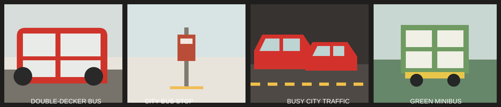

Buses and Minibuses
Extensive franchised bus routes cover remote beaches, mountain trails, and residential districts that rail lines don't reach. Regular double-decker buses accept Octopus cards and feature digital route displays, while green and red minibuses require a bit more local confidence: you often have to call out your desired stop in Cantonese or English before pressing the bell. The phrase to learn is “Yau lok, m̀h'gōi!” — “I'm getting off, please!” With this, you're all set to enjoy the hectic ride.
